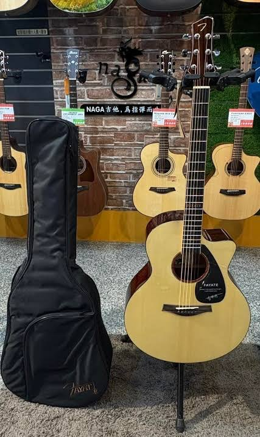

NEOWOOD
Easy to play, easy to love.
在實用、設計與價格之間找到平衡。從 GA1C、GA2C 民謠吉他到 ADELE 39 吋古典吉他，手感舒適、音色清晰。
新手友善舒適手感清晰音色高 CP 值
看產品 →
Guitars
從 3,000 元的第一把琴，到捷克手工全單板。每把都能現場試彈，買琴附全套配件，之後調整不限次數。
3,000–6,000 元 · 社團新生、成人初學
Easy to play, easy to love.
在實用、設計與價格之間找到平衡。從 GA1C、GA2C 民謠吉他到 ADELE 39 吋古典吉他，手感舒適、音色清晰。

Designed around the way you play.
以 GA 桶身為主，搭配雲杉面板等木材配置，抱起來輕鬆。部分型號有舒適手靠，並附贈實用配件。
Where wood becomes design.
重視天然木材的美感，讓木紋成為吉他最動人的地方。從材質、細節到外觀都用心設計。
7,000–20,000 元 · 想要更好的音色或準備上台
Beyond the traditional guitar.
結合創新材料、特殊外觀與鑲嵌設計。從 Dog 系列到全單板吉他，每一把都有自己的個性。
Engineered for sound.
專注原聲吉他的聲學研究與製琴技術，從木材配置到結構細節反覆調校，追求平衡飽滿的音色。

Every grain tells a story.
讓天然木材的個性被看見，部分型號使用芒果木等特色木材，每一把都有獨特木紋。
Made for fingerstyle.
為指彈而生，與演奏家合作打造，包括鄭晟河 Sungha Jung 相關系列。重視手感與音色層次。
20,000–40,000+ 元 · 進階玩家、演出者
傳訊息告訴我們預算和想彈的音樂，我們先幫你準備幾把試彈。現場也歡迎直接來。